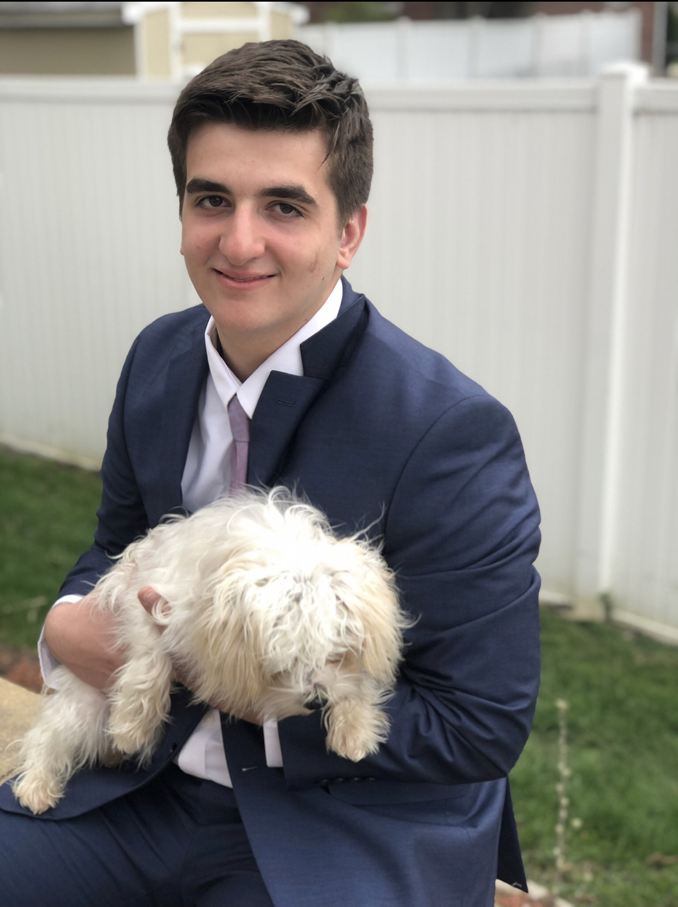

Hi my name is Ardian I'm 5"11 and I was born in america. But me and my family are from Albania. Also I played the clarinet in Highschool and really enjoyed it. Now My mom and my dad are very caring people who truly want to see me do my best. My mom is a pre-K teacher and my dad is a manger at multiple parking faculties in Chicago.I am planning on majoring in Computer Sceince.
My favorite Hobby I would say is watching and playing sports. I used to play football and track and even a little bit of baseball throughtout my Highschool career. I really enjoyed them and made numerous friends and it made me grow as a person. Which is why I'm looking to join a sports club. It could be any sport. Finally I love watching football every sunday with my family and just non-stop football for like 8 hours.
I've been to Albania twice in my life and I really like to travel.
Discord info ardiandardovski1#5828
Email: ardiandardovski@lewisu.edu